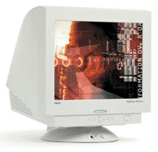
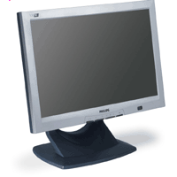
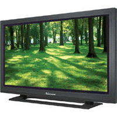

Computermonitore |
|
|
| Computermonitore unterscheiden sich durch die Verwendung unterschiedlicher Technologien bei der Darstellung der Bilder. |
|
|
Technologien für die Bildwandlung:
- CRT
- LED
- Plasma
|
|
| |
| Monitorart |
Vorteile |
Nachteile |
| CRT-Monitor |
|
|
|  |
großes Kontrastverhältnis, große Lichtstärke, hohe Reaktionsgeshwindikeit |
hoher Energieverbrauch, große gehäuseabmessungen, gewölbter Bildschirm |
| LCD-Monitor |
|
|
|  |
geringer Energieverbrauch, geringer Platzbedarf, flacher Bildschirm |
nidrige Reaktionsgeschwindikeit, eingeschränkter Betrachtwinkel, geringe Lichtstärke |
| Plasma-Monitor |
|
|
|  |
große lichtstärke, geringer Platzbedarf, flacher Bildschirm, große Bildschirmdiagonalen möglich |
hoher Energeiverbrauch, niedrige Reaktionsgeschwindikeit |
| |
| Webseite der TAI11 -Berufsfachschule für technische Assistenten / Hof |
Autor © Max Mustermann |